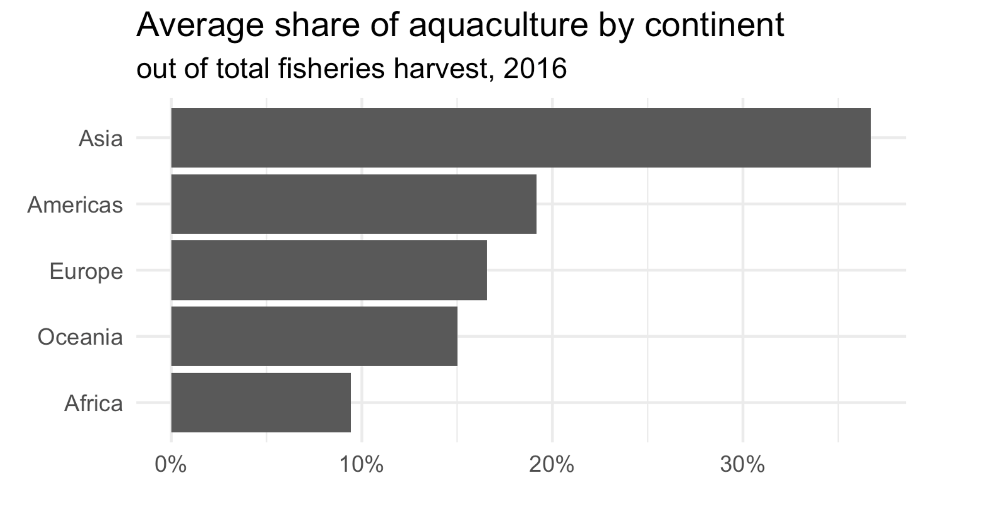
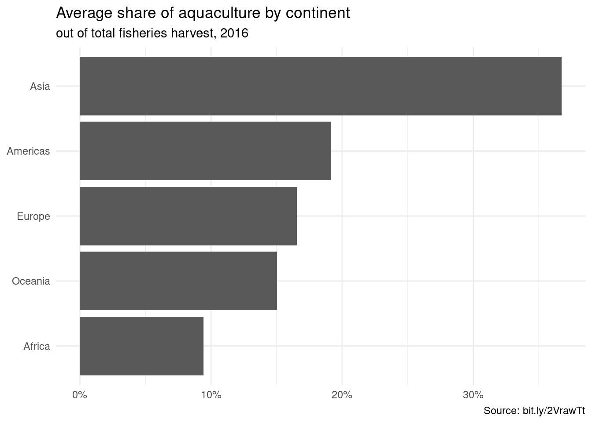

library(tidyverse)
library(scales)
fisheries <- read_csv("data/fisheries.csv")
continents <- read_csv("data/continents.csv")AE 04: Joining fisheries
Suggested answers
Application exercise
Answers
Working with multiple data frames
Often instead of being provided the data you need for your analysis in a single data frame, you will need to bring information from multiple datasets together into a data frame yourself. These datasets will be linked to each other via a column (usually an identifier, something that links the two datasets together) that you can use to join them together.
There are many possible types of joins. All have the format something_join(x, y).
x <- tibble(
value = c(1, 2, 3),
xcol = c("x1", "x2", "x3")
)
y <- tibble(
value = c(1, 2, 4),
ycol = c("y1", "y2", "y4")
)
x# A tibble: 3 × 2
value xcol
<dbl> <chr>
1 1 x1
2 2 x2
3 3 x3 y# A tibble: 3 × 2
value ycol
<dbl> <chr>
1 1 y1
2 2 y2
3 4 y4 We will demonstrate each of the joins on these small, toy datasets.
inner_join(): join all rows from x where there are matching values in y
inner_join(x, y)Joining with `by = join_by(value)`# A tibble: 2 × 3
value xcol ycol
<dbl> <chr> <chr>
1 1 x1 y1
2 2 x2 y2 left_join(): include all rows from x
left_join(x, y)Joining with `by = join_by(value)`# A tibble: 3 × 3
value xcol ycol
<dbl> <chr> <chr>
1 1 x1 y1
2 2 x2 y2
3 3 x3 <NA> right_join(): include all rows from y
right_join(x, y)Joining with `by = join_by(value)`# A tibble: 3 × 3
value xcol ycol
<dbl> <chr> <chr>
1 1 x1 y1
2 2 x2 y2
3 4 <NA> y4 full_join(): include all rows in x or y (use this one sparingly!!)
full_join(x, y)Joining with `by = join_by(value)`# A tibble: 4 × 3
value xcol ycol
<dbl> <chr> <chr>
1 1 x1 y1
2 2 x2 y2
3 3 x3 <NA>
4 4 <NA> y4 semi_join(): return all rows from x with match in y
semi_join(x, y)Joining with `by = join_by(value)`# A tibble: 2 × 2
value xcol
<dbl> <chr>
1 1 x1
2 2 x2 anti_join(): return all rows from x without a match in y
anti_join(x, y)Joining with `by = join_by(value)`# A tibble: 1 × 2
value xcol
<dbl> <chr>
1 3 x3 Question: How do the join functions above know to join x and y by value? Hint: Examine the column names to find out.
names(x)[1] "value" "xcol" names(y)[1] "value" "ycol" Global aquaculture production
The Fisheries and Aquaculture Department of the Food and Agriculture Organization of the United Nations collects data on fisheries production of countries.
Our goal is to create a visualization of the mean share of aquaculture by continent.
Let’s start by looking at the fisheries data frame.
glimpse(fisheries)Rows: 82
Columns: 4
$ country <chr> "Angola", "Argentina", "Australia", "Bangladesh", "Brazil"…
$ capture <dbl> 486490, 755226, 174629, 1674770, 705000, 629950, 233190, 8…
$ aquaculture <dbl> 655, 3673, 96847, 2203554, 581230, 172500, 2315, 200765, 9…
$ total <dbl> 487145, 758899, 271476, 3878324, 1286230, 802450, 235505, …We have the countries, but our goal is to make a visualization by continent. Let’s take a look at the continents data frame.
glimpse(continents)Rows: 245
Columns: 2
$ country <chr> "Afghanistan", "Åland Islands", "Albania", "Algeria", "Ameri…
$ continent <chr> "Asia", "Europe", "Europe", "Africa", "Oceania", "Europe", "…- Your turn (2 minutes):
- Which variable(s) will we use to join the
fisheriesandcontinentsdata frames? - We want to keep all rows and columns from
fisheriesand add a column for corresponding continents. Which join function should we use?
- Which variable(s) will we use to join the
- Demo: Join the two data frames and name assign the joined data frame back to
fisheries.
fisheries <- fisheries |>
left_join(continents)Joining with `by = join_by(country)`- Demo: Take a look at the updated
fisheriesdata frame. There are some countries that were not incontinents. First, identify which countries these are (they will haveNAvalues forcontinent). Then, manually update thecontinentinformation for these countries using thecase_whenfunction. Finally, check that these updates have been made as intended and no countries are left without continent information.
fisheries |>
filter(is.na(continent))# A tibble: 3 × 5
country capture aquaculture total continent
<chr> <dbl> <dbl> <dbl> <chr>
1 Democratic Republic of the Congo 237372 3161 240533 <NA>
2 Hong Kong 142775 4258 147033 <NA>
3 Myanmar 2072390 1017644 3090034 <NA> fisheries <- fisheries %>%
mutate(
continent = case_when(
country == "Democratic Republic of the Congo" ~ "Africa",
country == "Hong Kong" ~ "Asia",
country == "Myanmar" ~ "Asia",
TRUE ~ continent
)
)
fisheries |>
filter(is.na(continent))# A tibble: 0 × 5
# ℹ 5 variables: country <chr>, capture <dbl>, aquaculture <dbl>, total <dbl>,
# continent <chr>- Demo: Add a new column to the
fisheriesdata frame calledaq_prop. We will calculate it asaquaculture / total. Save the resulting frame asfisheries.
fisheries <- fisheries |>
mutate(aq_prop = aquaculture / total)- Demo: Calculate the mean aquaculture proportion (we’ll call it
mean_aq_prop) for continents in the fisheries data using thesummarize()function in dplyr. Note that the function for calculating the mean ismean()in R.
fisheries |> # start with fisheries data frame
group_by(continent) |> # group by continent
summarize(mean_aq_prop = mean(aq_prop)) # calculate mean aquaculture# A tibble: 5 × 2
continent mean_aq_prop
<chr> <dbl>
1 Africa 0.0943
2 Americas 0.192
3 Asia 0.367
4 Europe 0.165
5 Oceania 0.150 - Your turn (5 minutes): Now expand your calculations to also calculate the minimum and maximum aquaculture proportion for continents in the fisheries data. Note that the functions for calculating minimum and maximum in R are
min()andmax()respectively.
fisheries |> # start with fisheries data frame
group_by(continent) |> # group by continent
summarize( # calculate summary stats
min_aq_prop = min(aq_prop),
mean_aq_prop = mean(aq_prop),
max_aq_prop = max(aq_prop)
) # A tibble: 5 × 4
continent min_aq_prop mean_aq_prop max_aq_prop
<chr> <dbl> <dbl> <dbl>
1 Africa 0 0.0943 0.803
2 Americas 0 0.192 0.529
3 Asia 0 0.367 0.782
4 Europe 0.00682 0.165 0.618
5 Oceania 0.0197 0.150 0.357- Demo: Create a new data frame called
fisheries_summarythat calculates minimum, mean, and maximum aquaculture proportion for each continent in the fisheries data. Then, determine which continent has the largest value ofmax_ap?
fisheries_summary <- fisheries |> # start with fisheries data frame
group_by(continent) |> # group by continent
summarize( # calculate summary stats
min_aq_prop = min(aq_prop),
mean_aq_prop = mean(aq_prop),
max_aq_prop = max(aq_prop)
)- Demo: Take the
fisheries_summarydata frame and order the results in descending order of mean aquaculture proportion.
fisheries_summary |> # start with fisheries_summary data frame
arrange(desc(mean_aq_prop)) # order in descending order of mean_aq_prop# A tibble: 5 × 4
continent min_aq_prop mean_aq_prop max_aq_prop
<chr> <dbl> <dbl> <dbl>
1 Asia 0 0.367 0.782
2 Americas 0 0.192 0.529
3 Europe 0.00682 0.165 0.618
4 Oceania 0.0197 0.150 0.357
5 Africa 0 0.0943 0.803- Demo: Recreate the following plot using the data frame you have developed so far.

ggplot(fisheries_summary,
aes(y = fct_reorder(continent, mean_aq_prop), x = mean_aq_prop)) +
geom_col() +
scale_x_continuous(labels = label_percent(accuracy = 1)) +
labs(
x = NULL,
y = NULL,
title = "Average share of aquaculture by continent",
subtitle = "out of total fisheries harvest, 2016",
caption = "Source: bit.ly/2VrawTt"
) +
theme_minimal()
- Your turn (time permitting): Change the theme of the plot and make any other changes you would like to improve it.
# add your code here